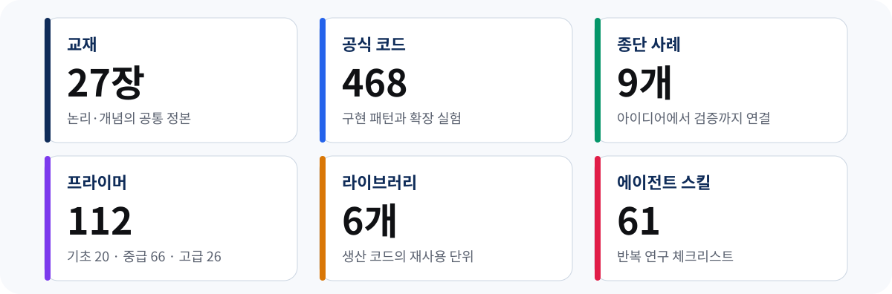
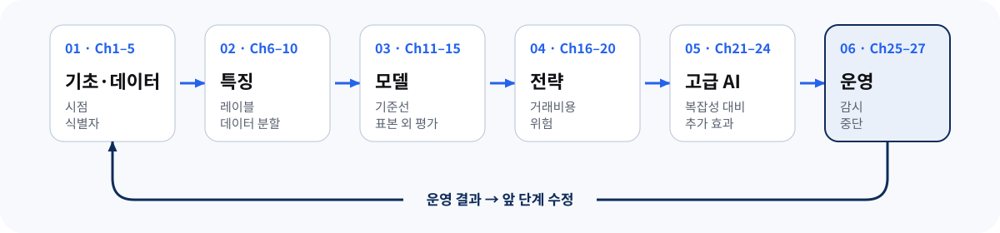
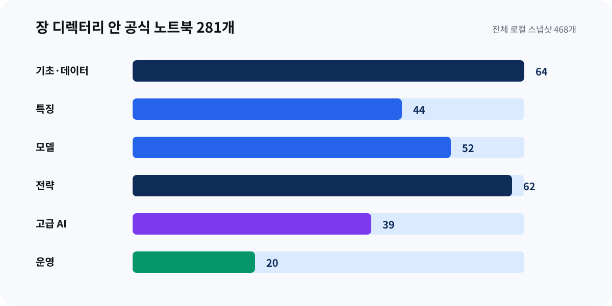
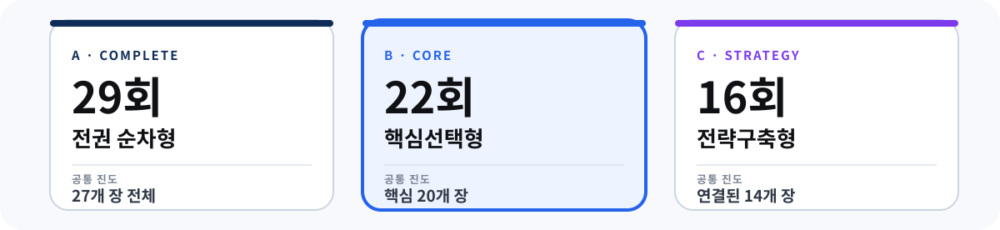
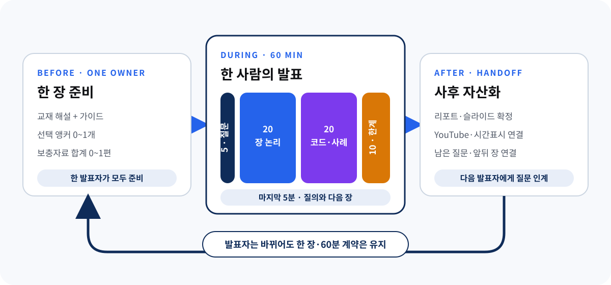

방대한 교재를
끝까지 ‘연구’하는 법
Machine Learning for Trading 3판의 27개 장과 468개 노트북을
우리의 해설·실습·발표·영상 자산으로 바꾸는 운영 설계
0. 오늘 정할 것은 책보다 ‘완주 방식’이다
이 교재는 개념서 한 권이 아니다. 데이터 수집에서 연구 설계, 모델, 백테스트, 포트폴리오, 고급 AI, 실거래 운영까지 이어지는 연구 시스템이며, 공식 사이트는 27개 장·9개 사례·6개 라이브러리·112개 프라이머·61개 에이전트 스킬을 함께 제공한다. 그러므로 “몇 장씩 발표할까?”만 정하면 자료의 폭이 곧 작업량 폭발로 바뀐다.
| 결정 | 기본 제안 | 토론할 대안 |
|---|---|---|
| 범위 | 20회 균형형, 27장은 묶어서 모두 지도에 남김 | 32~36회 완독형 / 12회 프로젝트형 |
| 종단 사례 | 가벼운 ETF 사례를 공통 척추로 사용 | 팀별 사례 분기 또는 사례 없이 장별 실습 |
| 실습 깊이 | 회차당 앵커 노트북 1개 + 사전 실행 산출물 | 발표자 선택 / 전수 실행 |
| 역할 | 발표자·재현자·검증자 3역 순환 | 기존 1인 발표 유지 |
| 산출물 | 해설+가이드 노트북+리포트+슬라이드+영상 | 일부 단계 축소 또는 통합 |
1. 책 한 권이 아니라 여섯 층의 학습 생태계
- 책은 논리를, 공식 코드는 구현 폭을, 사례는 연결성을 제공한다.
- 프라이머는 선수 지식 격차를 메우고, 라이브러리·스킬은 재사용과 자동화를 보여준다.
- 모든 층을 같은 깊이로 공부하지 말고 회차 목적에 맞춰 조합해야 한다.

수치는 로컬 공식 코드 스냅샷과 2026-08-30 공식 사이트 기준. 공식 사이트는 노트북 수를 446+로 표기하며, 로컬 스냅샷의 전체 ipynb 실측은 468개다.| 자료 | 우리에게 필요한 역할 | 기본 사용 | 주의 |
|---|---|---|---|
| 교재 마크다운·한국어 해설 | 공통 개념과 논리의 정본 | 모든 회차 | 원문·해설·발표자 해석 구분 |
| Ch1–27 가이드 노트북 | 가벼운 재현 가능한 입구 | 모든 회차 | 공식 예제 전체를 대체하지 않음 |
| 공식 노트북·Python | 구현 패턴과 확장 실험 | 앵커 1개 | API 키·유료 데이터·GPU·시간 비용 |
| 9개 종단 사례 | 장 사이 연결과 실제 연구 판단 | ETF 1개 공통 | 결과보다 누수·비용·조건 우선 |
| 112 프라이머 | 선수지식·보충읽기 | 주당 1~3개 | 공개는 요약·참고문헌, 본문은 계정 필요 |
| 61 에이전트 스킬 | 반복 작업의 체크리스트 | 후반부 선택 | 목록을 기능 보증으로 오해하지 않기 |
공식 개요: ml4trading.io · 27장 구성 · 사례 · 프라이머 · 라이브러리
2. 27장은 하나의 검증 루프로 읽어야 한다
장 순서는 데이터→특징→모델→전략→고급 AI→운영으로 움직인다. 이 흐름은 매주 새로운 주제로 갈아타는 목차가 아니라, 앞 단계의 선택이 다음 단계에서 어떻게 검증되고 다시 수정되는지를 보여주는 연구 루프다.

AIML Quant 재구성. 운영에서 얻은 증거가 앞 단계의 질문·데이터·가정을 다시 수정한다는 방향으로 읽는다.
27개 장 디렉터리 안의 ipynb 281개 실측. 나머지는 사례·공용 도구·라이브러리 등에 분포한다. 노트북 수는 난이도가 아니라 선택 부담의 크기를 보여준다.| 파트 | 핵심 질문 | 통합 산출물 | 다음 단계 통과 기준 |
|---|---|---|---|
| Ch1–5 기초·데이터 | 무엇을 언제 알 수 있었나? | 데이터 계약 | 생존·미래정보 누수 점검 |
| Ch6–10 특징 | 예측 시점에 계산 가능한가? | 특징·레이블·split 명세 | purging/embargo와 기준선 |
| Ch11–15 모델 | 단순 기준선보다 안정적인가? | 모델 카드와 OOS 비교 | 튜닝 누수·비용 전 수익 |
| Ch16–20 전략 | 비용·위험까지 살아남나? | 백테스트·포트폴리오 규칙 | 비용·용량·stress test |
| Ch21–24 고급 AI | 복잡성이 추가 가치를 주나? | RL·RAG·KG·Agent 제한 실험 | 실패 경계·도구 권한·평가 |
| Ch25–27 운영 | 반복·감시·중단 가능한가? | paper-trading 운영 런북 | 재현성·drift·rollback |
3. 우리의 기존 방식은 보존하되 역할을 나눈다
과거 workspace/ml4t 기록과 현재 머신 트레이딩 회차를 함께 보면, 장별 발표·질의응답·영상 기록은 참여 책임과 공개 자산을 만든다는 점에서 효과가 있었다. 최근에는 한국어 해설, 실행형 노트북, 상세 HTML 리포트, 발표자료까지 품질 사슬이 성숙했다. 문제는 이 모든 제작 부담이 한 사람에게 몰리면 Ch1–27 규모에서 지속하기 어렵다는 점이다.
| 관찰 | 유지할 것 | 이번에 바꿀 것 |
|---|---|---|
| 7개 장은 1인 중심 운영 가능 | 기존 참가자 최소 1회 발표 | Ch1–27을 14개 내용 회차로 묶고 3역 분담 |
| 50분 발표+10분 Q&A | 발표·질문·녹화의 명확한 흐름 | 2시간을 개념·실행·검증·결정으로 분할 |
| HTML 리포트+슬라이드의 재사용성 | 긴 리포트와 발표 요약 분리 | 실행 근거 카드와 사례 연결 필수 |
| ETF 실전 학습과 장기 역량 선호 | 단기 수익보다 재현 가능한 과정 | ETF 사례를 전 회차 공통 기준선으로 |
| 활동 인원이 적으면 부담 집중 | 연속 발표 최대 2회 | 청강·미니 발표·재현자도 기여로 인정 |
좋은 회차는 “설명을 많이 한 회차”가 아니라 하나의 연구 판단을 재현하고 반박할 수 있게 만든 회차다.
4. 세 가지 완주 전략을 같은 기준으로 비교한다

AIML Quant 운영안. 막대는 정밀 측정값이 아니라 각 안의 상대적 장 커버리지와 종단 사례 연결성을 나타낸다.| 안 | 구성 | 강점 | 위험 | 맞는 경우 |
|---|---|---|---|---|
| A · 완독형 32~36회 | 27개 장 각각 + 통합 실습·회고 | 목차 보존, 개별 주제 깊이 | 8개월 이상, 제작 피로, 연결 약화 | 인원과 장기 일정이 안정적 |
| B · 균형형 20회 | 14개 내용 + 4개 랩 + 온보딩·회고 | 전체 지도와 종단 사례의 균형 | 장 묶음·역할 조율 필요 | 현재 기본 제안 |
| C · 프로젝트형 12회 | ETF 사례의 데이터→운영 중심 | 빠른 실행 결과, 높은 연결성 | 일부 장 선택 읽기, 개념 공백 | 시간이 짧고 결과물을 우선 |
4.1 기본 제안: 20회 워크플로 나선형
| 회차 | 범위 | 공통 결과물 | ETF 사례 연결 |
|---|---|---|---|
| 01 | 온보딩·환경·재현 규칙 | 환경 확인표, 역할표 | 사전 계산 산출물 열기 |
| 02–04 | Ch1 / Ch2–3 / Ch4–5 | 연구 질문, 데이터·시점 계약 | ETF 유니버스·가격 |
| 05 · Lab A | 데이터 통합 | point-in-time 데이터 검증 | 누수·결측·식별자 감사 |
| 06–09 | Ch6–7 / Ch8–10 / Ch11–12 / Ch13–15 | split, feature, baseline, 모델 카드 | 신호 생성·OOS 예측 |
| 10 · Lab B | 모델 통합 | 기준선과 실패 분석 | 단순 대 복잡 모델 |
| 11–12 | Ch16–17 / Ch18–20 | 백테스트·비용·포트폴리오 | 순수익·위험 예산 |
| 13 · Lab C | 전략 통합 | 독립 검증 체크리스트 | end-to-end 재현 |
| 14–16 | Ch21 / Ch22–23 / Ch24 | 고급 AI 증분 가치 실험 | 선택적 연구 보조 |
| 17 · Lab D | 에이전트·도구 안전성 | 권한·평가·실패 경계 | 읽기 전용 자동화 |
| 18–19 | Ch25–26 / Ch27 | 운영 런북·전체 회고 | paper-trading·monitoring |
| 20 | 최종 리뷰·다음 결정 | 공동 연구 기록·백로그 | 계속/수정/중단 |
5. 매주 제작물이 아니라 검증 루프를 반복한다

AIML Quant 운영 제안. 사후 결정 로그가 다음 회차의 입력과 검증 gate가 되는 순환이다.5.1 세 역할을 순환한다
| 역할 | 책임 | 회의 전 완료 조건 | 회의에서 묻는 질문 |
|---|---|---|---|
| 발표자·큐레이터 | 장 묶음 논리와 리포트·슬라이드 | 핵심 주장 3개, 출처, 토론 질문 | 워크플로의 어느 결정을 바꾸나? |
| 재현자 | 가이드·앵커 노트북 실행 | 환경·입력·출력·소요시간 | 다른 사람도 같은 결과를 얻나? |
| 검증자·회의론자 | 누수·비용·기준선·실패 경계 감사 | 반증 질문 3개와 중단 조건 | 무엇이 틀리면 결론이 뒤집히나? |
5.2 120분의 시간 예산
| 시간 | 구간 | 산출 |
|---|---|---|
| 10분 | 이전 gate와 오늘 질문 | 미해결 리스크 |
| 35분 | 개념·메커니즘 발표 | 핵심 주장과 위치 |
| 25분 | 앵커 노트북 재현 | 입력·split·기준선·출력 |
| 25분 | ETF 사례 연결 | 앞 단계 산출물 변화 |
| 15분 | 검증자 red-team | 누수·비용·실패 신호 |
| 10분 | 결정·다음 행동 | 로그와 담당자 |
6. ‘다 돌리기’ 대신 선택·고정·감사한다
로컬 자료에는 Ch1–27 가이드 노트북, 공식 코드와 사전 계산된 사례 산출물이 준비되어 있다. 하지만 외부 API 키, 라이선스 데이터, GPU, 긴 실행 시간이 필요한 예제가 섞여 있고 특정 네트워크에서는 접근 제약도 확인됐다. 실행 범위는 개인의 의욕이 아니라 공통 재현 계약으로 통제해야 한다.
| 단계 | 무엇을 실행하나 | 언제 쓰나 | 완료 조건 |
|---|---|---|---|
| L1 · Guide | 로컬 장별 가이드 노트북 | 모든 회차 최소선 | 깨끗한 환경 PASS, provenance 일치 |
| L2 · Anchor | 공식 노트북 1개 또는 작은 부분 | 핵심 메커니즘 | 고정 입력·버전·시간·출력 |
| L3 · Case | 사례 전체 또는 산출물 감사 | 4개 통합 랩 | 단계 연결·비용·실패 분석 |
6.1 ETF 사례를 첫 척추로 제안하는 이유
- 공식 릴리스가 입문용으로 먼저 제시하고, 사전 계산 번들이 약 33MB로 작다.
- 데이터→특징→예측→포트폴리오→백테스트의 전 흐름을 다루면서 자산군이 직관적이다.
- 2026년 운영 논의 기록의 “ETF 실전 학습” 선호와 연결된다.
공식 코드·산출물: GitHub 저장소 · Releases. 참가자용 로컬 정리: 자료 안내.
7. 웹 자료는 ‘대체 교재’가 아니라 회차별 입구로 쓴다
| 자료 | 어디에 쓰나 | 권장 사용법 | 상태·주의 |
|---|---|---|---|
| 공식 Guided Tour | 전체 온보딩 | 첫 회차 전 구조 질문 1개 | 공식 홈페이지 연결 영상 |
| Idea→Validated Strategy | Ch1·통합 랩 | 단계와 우리 산출물 대응 | 저자의 무료 공식 레슨 |
| 112 Primers | 선수·보충 | 회차당 1~3개 선별 | 20 기초·66 중급·26 고급; 본문은 계정 필요 |
| DATAcated 인터뷰 | 역사·저자 관점 | 2판과 3판 변화 토론 | 2021년, 현재 3판 안내 아님 |
| Packt 저자 세션 | 초기 문제의식 | 선택 시청 후 현재 구조와 비교 | 2021년 2판 시대 자료 |
| 61 Agent Skills | Ch24·Lab D | 한 워크플로를 읽기 전용 실험 | 세부 접근 상태 확인 |
7.1 프라이머 운영 규칙
- 발표자가 장별 필수 1개, 선택 2개를 지정한다. 112개 전수를 새 번역 과제로 만들지 않는다.
- 공개 요약과 참고문헌을 근거로 한국어 선수지식 카드를 만들되, 접근하지 못한 본문을 번역했다고 표시하지 않는다.
- 설명은 회차 리포트에 흡수하고, 원문·공개 요약·우리 보충을 구분한다.
8. 9월 12일에는 이 순서로 결정한다
| 평가축 | 질문 | 가중치 | 1점 / 5점 |
|---|---|---|---|
| 학습 가치 | 장기 연구 역량에 기여? | 25% | 주제 나열 / 전체 과정 연결 |
| 지속 가능성 | 현재 인원으로 감당 가능? | 25% | 이탈 위험 / 역할 순환 |
| 재현성 | 공통 환경·데이터로 확인? | 20% | 외부 의존 / L1·L2 안정 |
| 실전 연결 | 결과가 전략으로 축적? | 20% | 회차 단절 / 사례 누적 |
| 공개 자산 | 다음 참가자에게 남는가? | 10% | 일회성 / 탐색 가능 |
8.1 60분 논의 진행안
8.2 회의가 끝날 때 남길 문장
- 우리는 [A/B/C]안을 선택한다.
- 공통 종단 사례는 [ETF/다른 사례/없음]이다.
- 회차당 실행 깊이는 기본 [L1/L2/L3]다.
- 첫 4회의 발표자·재현자·검증자는 [이름]이다.
- [날짜]에 계속/수정/중단을 다시 판단한다.
참고 자료와 분석 경계
- 공식 개요·장 지도 — ML4T 3e, Chapters, 확인 2026-08-30.
- 공식 코드·릴리스 — Repository, precomputed artifacts.
- 공식 학습 보조 — Primer, Case Studies, Libraries, Skills.
- 저자 영상 — Guided Tour, free lesson.
- 내부 근거 — ML4T 3판 로컬 자료·실행 원장과 2025–2026
workspace/ml4t일정·운영 규칙·회의 기록. 비공개 교재와 로컬 경로는 공개 페이지에 직접 노출하지 않았다.
커리큘럼·역할·시간 배분·평가표는 공식 교재의 처방이 아니라 AIML Quant 운영 제안이다. 공식 사이트의 “446+ 노트북”과 로컬 스냅샷의 468개 파일 수는 집계 시점·범위가 달라 함께 표기했다. 투자 성과를 보장하거나 투자 조언을 제공하지 않는다.